In software development, debugging a process after completion is called "post-mortem debugging"! We're trying to find out what caused a fatality.
After completing this lesson, you’ll be able to:
In this lesson, you will:
In this course, we’ll cover best practices for debugging your workspaces.
Even skilled FME users seldom produce new workspaces with zero defects. For that reason, all users must be aware of the debugging techniques available in FME.
Generally, debugging in FME consists of determining whether a problem has occurred and then tracking down the problem's source (for example, where it appears in the workspace). Once you have determined where a problem arises, you can investigate it.
There are various debugging techniques available in FME, and it's essential to use these in the correct order. For example, you shouldn't waste time randomly changing parameters and re-running the workspace when a simple log message explains the issue!
A logical order would be:
In software development, debugging a process after completion is called "post-mortem debugging"! We're trying to find out what caused a fatality.
FME logs contain a record of all stages and processes within a translation. The contents are vital for debugging purposes.
Log Message Types
Different message types appear in the log window, including:
The Log window is displayed as a table. The Transformer column shows you which transformer an error/information message is coming from. Click the hyperlinked transformer name to navigate to the canvas element producing the message. Using this link to identify where errors are occurring will make your debugging more efficient.
Besides writing the log to a text file (<workspace name>.log), FME also writes a spatial log:
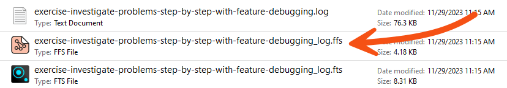
The spatial log is a dataset of features (in FME Feature Store format) that the log mentions. FME generates a spatial log from <Rejected> Features when Navigator > Workspace Parameters > Reader/Writer Redirect is enabled or when a Logger has Feature Logging set to "Log and Record." You can open the FFS dataset within FME Data Inspector or the Data Preview window in FME Workbench to inspect the features and identify any problems that caused FME to reject them.
The Translation Log window should be the first place you check when a translation finishes. It will tell you if there are any concerning errors or warnings.
Errors
If an ERROR occurs, FME will likely stop the translation. There will be red text in the log and some statements such as:
Program Terminating Translation FAILED.
There may be several ERROR messages, so scroll back up the log window and identify the first of these, which is the likely cause of the problem. For example, this message:
ERROR |Error connecting to PostgreSQL database(host='postgis.train.safe.com', port='5432', dbname='fmedata', user='fmedata', password='*'): 'FATAL: password authentication failed for user "fmedata" FATAL: password authentication failed for user "fmedata"
...is an obvious problem authenticating a database connection.
Warnings
Even when a translation succeeds, it's essential to check the log for the following comment:
Translation was SUCCESSFUL with X warning(s)
If there are any warnings (for example, if X > 0), use the search option to look for the word WARN. Any warning messages might significantly affect the quality of the output data.
Finding the Error's Source
Click the log hyperlink to look at the object on the canvas that produced the error.
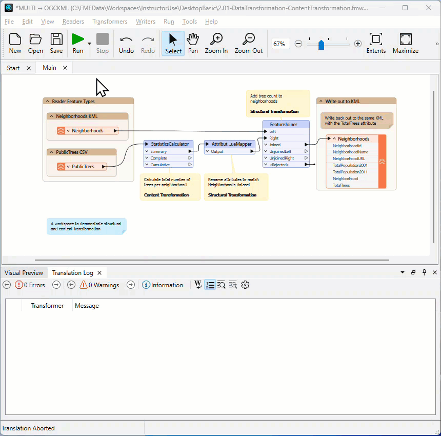

Frank is working on a workspace that reads address data from a File Geodatabase and writes it to a CSV with a new schema. He notices that text attributes containing Traditional Chinese characters are rendered incorrectly in the output. For example, the name "麥毅倫" appears as "???." He suspects a text encoding issue and needs to use his debugging skills at critical stages to determine when the data last looked correct.
In this exercise, you will:
It's easy to assume source data is correct without checking it. Before tracing the encoding problem in FME, confirm that the data looks correct in its native application.
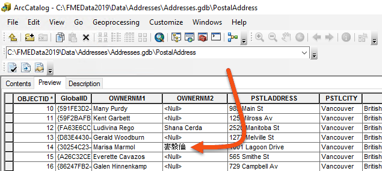
Now confirm that FME reads the source data correctly. One of the features with a Chinese character value belongs to owner Marisa Marmol. You'll use her name to filter down to the problem feature.
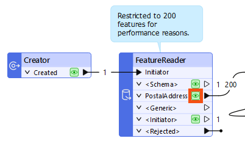
Marmol.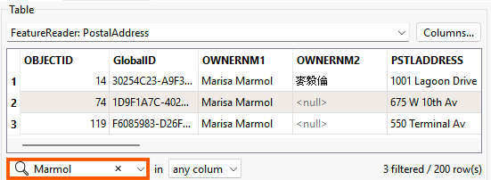
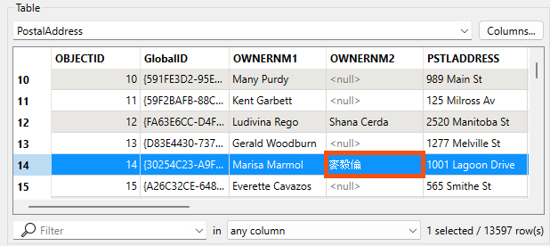
Now check whether the data is still correct after transformation and before writing.
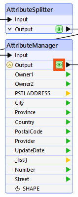
Marmol again.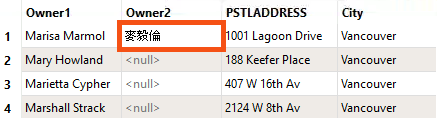
Since the data is correct going into the writer, check whether the problem occurs during writing.
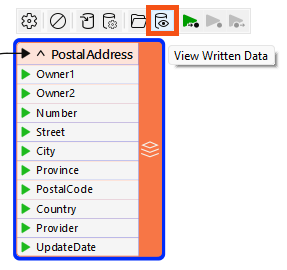
Marmol.???.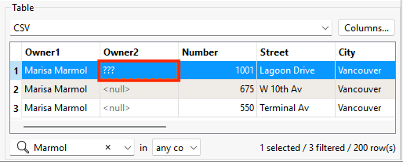
Opening the output file in a text editor is another useful check. It is not possible to do this for every dataset, such as binary files or databases, but text-based files can confirm whether the data is correct in the destination.
Marmol.???, the encoding problem was written into the file. If it displays correctly, the issue may be with how another application is interpreting the file.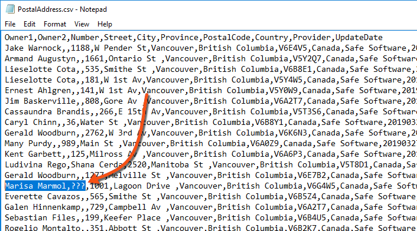
Although not the case in our scenario, if the file appears correct in a text editor but still displays incorrectly in the destination application, the problem is likely with the application's interpretation of the encoding.
Marmol and check the Owner2 column.??? is still visible here, this confirms the encoding problem was written into the file by FME. 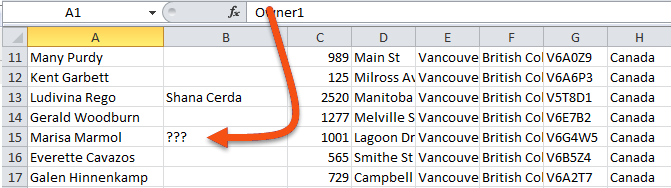
Inspecting data at multiple stages helps you narrow down where an encoding problem occurs, but it does not always reveal the root cause. The problem could be a writer parameter set incorrectly, a limitation of the writer format, or a difference in how two applications interpret the same file. Once you know which stage introduced the error, you have a clear starting point for investigating why.
Text encoding is a complex topic, so here is some useful background.
UTF-8 is the modern standard for text encoding because it supports all Unicode characters, including Traditional Chinese, Japanese, Arabic, and others. FME uses UTF-8 process encoding as of FME 2022.0. Before that, FME on Windows relied on the system's default ANSI encoding, which varied by regional settings (for example, Windows-1252 or Shift-JIS). UNIX-based systems have long used UTF-8 by default.
As of Windows 10 (version 1903) and Windows Server 2019, FME uses UTF-8 for encoding provided the system is configured to do so. This allows workspaces to be authored and run across different locales with consistent text output.
For more detail, see the UTF-8 Names FAQ.